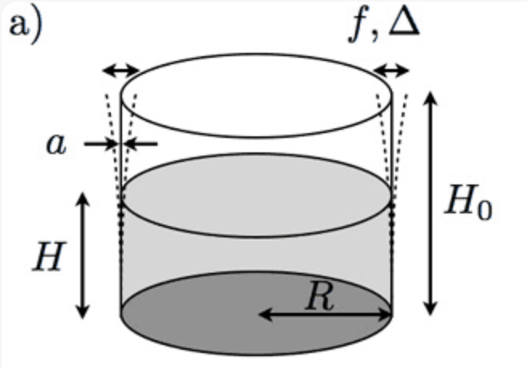
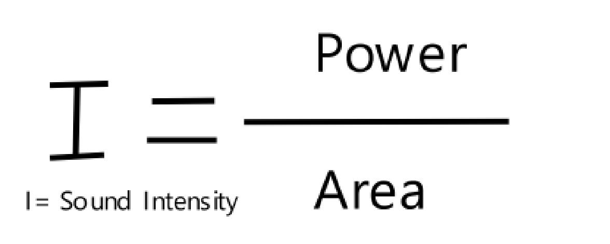

Our objective for this project was to successfully break glass utilizing sound. Issues that we predicted were damping and our potential lack of equipment. Research led us to using “crystal” wine glasses, opposed to regular ones . “Crystal”, in regards to wine glasses means that there are added alloys to it. They can be formed thinner due to this and have less of a damping factor and made more brittle . Most sources claimed that we need a wave with upwards of 105 decibel, which is difficult to generate with basic equipment.
Resonance is forcing an object to vibrate at its natural frequency which would cause the amplitude of vibrations to grow. Using resonance, theoretically, we should be able to cause a wine glass to vibrate enough that it shatters. Blasting sound with the same frequency as the wine glass’s resonant frequency should cause the wine glass to vibrate until it can not handle the stress anymore and hopefully shatter. Nodes and antinodes are present on most objects and this doesn’t exclude wine glasses. Nodes are located on the shaft and the bottom of the wine glass. The anti nodes are located near the top of the wine glass and hence why we aimed the sound near the top rather than the bottom. You can see a diagram in the picture below
In our case, sound waves start from the speakers. The driver inside the speaker generates a sound wave. When a sound is made, it creates compression and rarefaction in the particles of the medium that it is moving through. This series of oscillations will eventually stop when the wave loses energy. The frequency of the vibrations determines the pitch and the amplitude determines the volume.

We went to Kenny's house and performed the experiment using home supplies. Using home equipment we tried many different experiments. We hit the glass with a metal utensil and found its resonant frequency which was about 634 hz. We tried using a tone generator to play the frequency. Later we tried to record the sound the glass produced and just replay it back at the glass. After many failed attempts, we decided to call it quits and try buying new equipment.
During our next in person experiment, we decided to try a few different methods that we had researched in class the other day. This included putting the speakers on an elevated surface. With further research, we decided that putting the speakers at equal distance away from the wine glass didn’t hurt and that eliminated one variable. In the end we could not break the glass and decided to create a funnel in hopes of condensing the sound into one specific area. The funnel failed and we all decided we needed to buy better equipment and group up the next day.
We ordered a compression speaker that would hopefully arrive the next day and decided to buy a substitute speaker in the meantime. We picked up car speakers from Walmart that reached a maximum of 90 decibels. We had little hope in these speakers as we needed a minimum of 100 db in order to break glass. Regardless we still decided to try and to our expectations it did not break. Since it got too late we decided to regroup the next day when we got our new professional equipment.
The compression speaker in fact did not arrive and we were honestly very lost. We didn't have much of a backup plan so we just aimlessly tried again with no avail, spending most of our time just waiting for a package that never arrived.
In our last experiment, we obtained our compression driver. We used the same basic setup with one speaker, being our compression driver, which stood roughly 1.5 inches away from the glass. We measured the glass’ resonant frequency to be approximately 650 hz. With our new found equipment, we were able to successfully break the glass.
Compared to a regular speaker, a compression driver has quite a few pros for this experiment. In general, we found that they could handle a higher wattage, leading to greater decibel output. A general speaker distributes its sound wave, opposed to a compression driver which focuses in a small area. Using the equation for sound intensity of watts/area, we get a more intense sound if we have a smaller affected area(Decibels are calculated using sound intensity).
